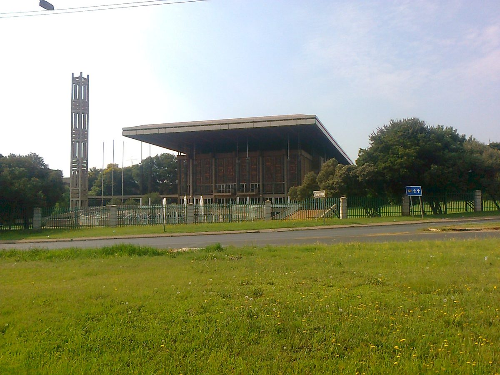

남아공 에쿠르훌레니시, 농산물시장 지붕·유휴부지에 25.6MW 태양광 착공…민간이 짓고 시가 20년간 전기 산다

사업비 3억6,000만 랜드, 연 약 40GWh 생산 예정…시는 초기 자본 없이 전력구매계약, 독립발전사업자에게서 최대 2,400MW를 사들이는 시 조달 프로그램의 하나
남아프리카공화국 하우텡주 에쿠르훌레니 광역시의 스프링스 농산물시장 지붕과 주변 유휴부지에 설비용량 25.6MW 규모의 태양광발전소 공사가 시작됐다. 사업비 3억6,000만 랜드가 드는 이 발전소는 가동 뒤 해마다 약 40GWh의 전기를 만들어 스프링스 변전소를 거쳐 시에 공급하며, 시는 20년 전력구매계약(PPA)으로 이 전기를 사들이되 건설 자본은 따로 내지 않는다. 발전소는 블루 레이블(Blu Label Unlimited)의 에너지 자회사 블루에너지(BluEnergy)가 과반 지분을 갖고 개발 파트너 IBS 크래프츠(IBS Crafts)와 함께 소유한 법인 '올림피아 파크(Olympia Park)'가 짓고 운영하며, IBS 크래프츠는 시의 독립발전사업자(IPP) 조달 프로그램에서 우선협상대상자로 선정됐다. 이 프로그램에 따라 시는 독립발전사업자에게서 최대 2,400MW의 전기를 살 수 있고, 20년 동안 전력 도매 비용을 약 360억 랜드 줄일 수 있을 것으로 시는 내다봤다. 지난 22일 착공식은 켁오시엔초 라모콥파 전기·에너지부 장관과 은코시핀딜레 샤카자 에쿠르훌레니 시장이 이끌었고, 전력 공급은 내년 4분기에 시작될 예정이다. 블루에너지가 앞서 밝힌 180MW 규모 사업 목록 가운데 공사에 들어간 첫 사업이며, 블루에너지는 올해 전력거래 면허를 받았지만 아직 거래는 시작하지 않았다.
시민에너지 관점
시가 건설비를 한 푼도 내지 않고 농산물시장 지붕과 놀던 땅을 내줘 25.6MW 발전소를 들이고 20년 동안 그 전기를 사는 구조는, 공공 부지가 도시 전력의 공급원이 될 수 있음을 보여 준다. 다만 발전소의 주인은 민간 기업이어서 시 소유 땅에서 나올 20년치 발전 수익은 대부분 사업자에게 돌아가고, 시와 시민은 전기를 사는 쪽에만 선다. 시민 출자로는 큰 자본을 모으기 어렵다는 우려도 있지만, 공공시설 지붕을 시민 출자 태양광에 내줘 온 일본 나가노현 이이다시는 2013년 조례로 주민이 지역의 재생에너지 자원을 먼저 쓸 권리를 '지역환경권'으로 정해 공공 부지 발전 사업에 주민이 주인으로 들어설 길을 열었다. 국내 지자체도 시장·주차장·청사 같은 공공 부지에 발전소를 들일 때 전력 구매 계약에 그치지 말고, 시민과 주민이 지분을 가질 몫을 공모 조건에 넣어야 한다.
출처: Business Day 2026-10-26 린디웨 트소보(Lindiwe Tsobo) 원문 보기
南アフリカ・エクルフレニ市、青果市場の屋根と遊休地に25.6MWの太陽光発電所を着工…民間が建設し市が20年間電力を購入
事業費3億6,000万ランド、年間約40GWhを発電予定…市は初期資本を負担せず電力購入契約、独立系発電事業者から最大2,400MWを調達する市の制度の一環
南アフリカ・ハウテン州エクルフレニ都市圏のスプリングス青果市場の屋根と周辺の遊休地で、設備容量25.6MWの太陽光発電所の工事が始まった。事業費3億6,000万ランドのこの発電所は、稼働後に年間約40GWhを発電し、スプリングス変電所を通じて市に供給する。市は20年間の電力購入契約（PPA）でこの電力を買い取るが、建設資本は負担しない。発電所は、ブルー・レーベル（Blu Label Unlimited）のエネルギー子会社ブルーエナジー（BluEnergy）が過半を出資し、開発パートナーのIBSクラフツ（IBS Crafts）と共同で所有する「オリンピア・パーク（Olympia Park）」が建設・運営し、IBSクラフツは市の独立系発電事業者（IPP）調達制度で優先交渉権者に選ばれた。この制度で市は独立系発電事業者から最大2,400MWの電力を購入でき、20年間で卸電力費用を約360億ランド削減できると見込んでいる。22日の着工式はラモクゴパ電力・エネルギー相とシャカザ・エクルフレニ市長が主導し、電力供給は来年第4四半期に始まる予定だ。ブルーエナジーが公表していた180MW規模の事業リストのうち着工した最初の案件で、同社は今年電力取引免許を取得したが、まだ取引は始めていない。
市民エネルギーの視点
市が建設費を一切負担せず、青果市場の屋根と遊休地を提供して25.6MWの発電所を誘致し、20年間その電力を買う仕組みは、公共用地が都市の電力の供給源になり得ることを示している。ただし発電所の所有者は民間企業であり、市有地から生まれる20年分の発電収益の大半は事業者に渡り、市と市民は電気を買う側にとどまる。市民出資では大きな資本を集めにくいという懸念もあるが、公共施設の屋根を市民出資の太陽光に提供してきた長野県飯田市は、2013年の条例で地域の再生可能エネルギー資源を住民が優先して使う権利を「地域環境権」と定め、公共用地の発電事業に住民が主体として加わる道を開いた。韓国の自治体も市場・駐車場・庁舎などの公共用地に発電所を誘致する際、電力購入契約で終わらせず、市民と住民が持分を持てる枠を公募条件に盛り込むべきだ。
出典: ビジネス・デイ（Business Day） 2026-10-26 リンディウェ・ツォボ（Lindiwe Tsobo） 原文を読む
南非埃库鲁莱尼市在农产品市场屋顶和闲置土地上开建25.6MW光伏电站…民间建设、市政府20年购电
项目投资3.6亿兰特，预计年发电约40GWh…市政府无需投入初始资本即签订购电协议，属于向独立发电商采购最多2,400MW电力的市级计划
南非豪登省埃库鲁莱尼大都市的斯普林斯农产品市场屋顶及周边闲置土地上，一座装机容量25.6MW的光伏电站已开工建设。这座投资3.6亿兰特的电站投运后每年将发电约40GWh，经斯普林斯变电站供给市政府；市政府按20年购电协议（PPA）购买这些电力，但不承担建设资本。电站由布鲁标签公司（Blu Label Unlimited）旗下能源子公司BluEnergy控股、与开发伙伴IBS Crafts共同持有的“奥林匹亚公园”（Olympia Park）公司建设和运营，IBS Crafts在市政府独立发电商（IPP）采购计划中被选为优先谈判对象。根据该计划，市政府最多可向独立发电商购买2,400MW电力，并预计20年内可节省约360亿兰特的趸售电力费用。22日的开工仪式由电力和能源部长拉莫科帕与埃库鲁莱尼市长沙卡扎主持，预计明年第四季度开始供电。这是BluEnergy此前公布的180MW项目清单中首个开工的项目，该公司今年已取得电力交易许可证，但尚未开展交易。
市民能源视角
市政府不出一分建设费，只提供农产品市场屋顶和闲置土地便引入25.6MW电站，并在20年内购买其电力，说明公共用地可以成为城市电力的来源。但电站的主人是民营企业，市有土地上产生的20年发电收益大部分归于企业，市政府和市民只站在买电的一方。有人担心靠市民出资难以筹集大额资本，但长期把公共设施屋顶提供给市民出资光伏的日本长野县饭田市，于2013年通过条例把居民优先利用本地可再生能源资源的权利定为“地域环境权”，为居民以主人身份参与公共用地发电项目开辟了道路。韩国地方政府在市场、停车场、办公楼等公共用地引进电站时，也不应止于签订购电协议，而应在招标条件中写入市民和居民可以持股的份额。
来源: 《商业日报》（Business Day） 2026-10-26 林迪韦·措博（Lindiwe Tsobo） 查看原文
South Africa's Ekurhuleni breaks ground on 25.6MW solar plant on produce market roof and vacant land, built by private firms with the city buying power for 20 years
The R360m plant is expected to generate about 40GWh a year; the city pays no upfront capital under a power purchase agreement that is part of its programme to buy up to 2,400MW from independent producers
Construction has begun on a 25.6MW solar plant on the roof of the Springs Fresh Produce Market and surrounding unused land in the City of Ekurhuleni, a metropolitan municipality in South Africa's Gauteng province. Once running, the R360m plant is expected to generate about 40GWh a year for the city through the Springs Bulk Substation, and the municipality will buy the power under a 20-year power purchase agreement (PPA) without putting up any construction capital. The plant will be built and operated by Olympia Park, a company majority-owned by BluEnergy, the energy business of Blu Label Unlimited, together with development partner IBS Crafts, which was chosen as preferred bidder under the city's independent power producer (IPP) programme. The programme allows the city to buy up to 2,400MW from independent producers, and the city estimates it could save about R36bn in bulk electricity costs over 20 years. Electricity and energy minister Kgosientsho Ramokgopa and Ekurhuleni executive mayor Nkosindiphile Xhakaza led the groundbreaking on October 22, and power is expected to flow in the fourth quarter of next year. It is the first project to enter construction from BluEnergy's previously disclosed 180MW pipeline, and the company, which received an electricity trading licence this year, has not yet started trading.
Citizen Energy View
A city that pays nothing toward construction, offers its produce market roof and idle land, and then buys the plant's output for 20 years shows that public land can become a source of urban power. But the plant belongs to private companies, so most of 20 years of generation income from city-owned land goes to the developers while the city and its residents stay on the buying side. Some will worry that citizen investment cannot raise that much capital, yet Iida in Japan's Nagano Prefecture, which has long lent public building roofs to citizen-funded solar, passed an ordinance in 2013 defining residents' right to use local renewable resources first as a "regional environmental right," opening the way for residents to take part in public-land generation as owners. Korean local governments bringing power plants onto markets, car parks and municipal buildings should go beyond power purchase deals and write a share for citizen and resident ownership into their tender terms.
Source: Business Day 2026-10-26 Lindiwe Tsobo Read the original